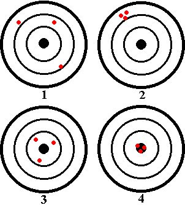

|  | There are two words in daily use that are related to the concept
of uncertainty, accuracy and precision. In daily use,
they are almost interchangeable, but in science they mean different
things. The distinction between the two words is related to, but not
the same as, the distinction between systematic error and
random error, two important concepts to be looked at more
closely in another session.
To the left are four dartboards, used by four different players. It is easy to see that the four players differ in ability, but the patterns of dots where the darts hit also nicely exhibit the difference between precision and accuracy. |